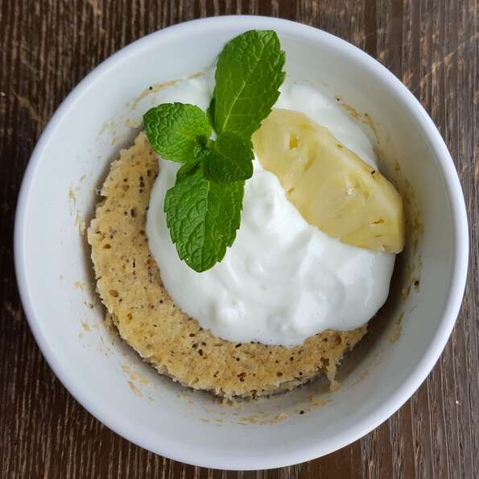

Pineapple mint mug cake
<
- 2 slices fresh pineapple
- 1 ripe banana
- 2 tablespoons cream of coconut
- 1 tablespoon rolled oats
- 1 tablespoon quick-cooking oats
- ¼ teaspoon baking powder
- 3 leaves fresh mint
- 1 teaspoon chia seeds
- 1 teaspoon poppy seeds
- Combine pineapple, banana, cream of coconut, rolled oats, quick-cooking oats, baking powder, mint, chia seeds, and poppy seeds in a blender; blend until smooth. Pour into 2 mugs.
- Microwave at the highest setting until mug cakes have set and risen well, about 3 minutes. Allow to cool a few minutes before serving.